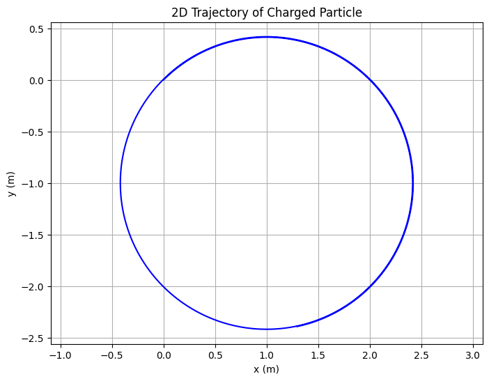
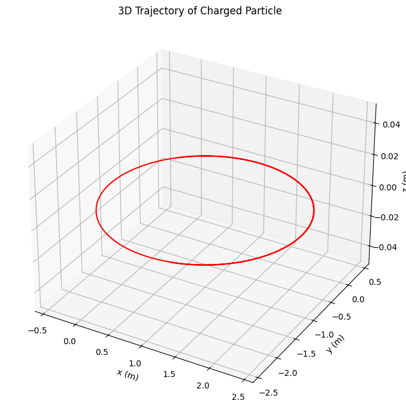
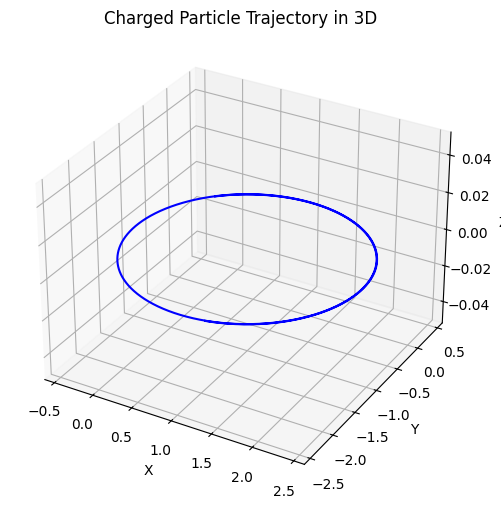
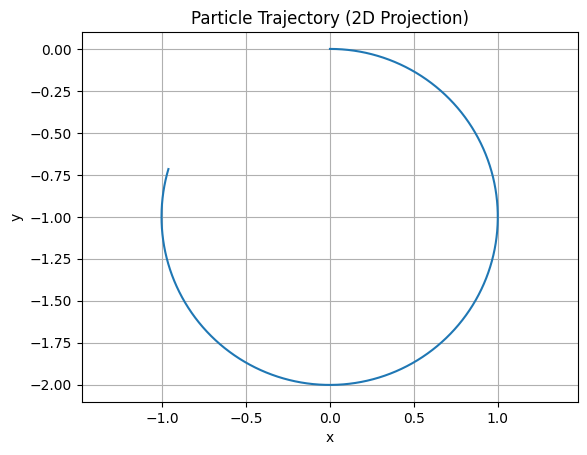

Problem 1
🧲 Simulating the Effects of the Lorentz Force
✨ Overview
This notebook demonstrates the dynamics of charged particles under electric and magnetic fields using the Lorentz Force Law. It builds simulations and visualizations for various field configurations—highlighting important physical phenomena like circular motion, helical paths, and the E × B drift.
1️⃣ Applications of the Lorentz Force
🔬 Real-World Systems Where It Applies:
| System | Lorentz Force Role |
|---|---|
| Particle Accelerators | Control particle orbits with magnetic fields; acceleration with electric fields |
| Mass Spectrometers | Sorts particles by mass-to-charge ratio via magnetic deflection |
| Plasma Confinement | Magnetic fields trap high-energy charged particles (e.g., in tokamaks, stellarators) |
| Cathode Ray Tubes | Electric and magnetic deflection of electrons to form images |
| Auroras / Magnetosphere | Charged particles spiral along Earth's magnetic field lines |
2️⃣ Theory Refresher: Lorentz Force Law
\[
\vec{F} = q(\vec{E} + \vec{v} \times \vec{B})
\]
- \(\vec{F}\): net force acting on the particle
- \(q\): charge of the particle
- \(\vec{E}\): electric field (vector)
- \(\vec{B}\): magnetic field (vector)
- \(\vec{v}\): velocity of the particle
The resulting acceleration affects the trajectory in a non-linear way. The motion depends heavily on the direction and magnitude of fields and the initial conditions.
3️⃣ Numerical Simulation
We'll simulate this using the Euler method for simplicity, though a more accurate Runge-Kutta method can be implemented later.
🔧 Python Implementation
 
📈 3D Visualization of Trajectory

4️⃣ Parameter Exploration and Motion Types
| Scenario | Description | Motion Type |
|---|---|---|
| \(\vec{B} \neq 0, \vec{E} = 0\) | Pure magnetic field | Circular or helical |
| \(\vec{E} \neq 0, \vec{B} = 0\) | Pure electric field | Linear acceleration |
| \(\vec{E} \parallel \vec{B}\) | Fields aligned | Spiraling/acceleration |
| \(\vec{E} \perp \vec{B}\) | Crossed fields (ExB) | Drift motion |
✳️ Larmor Radius & Cyclotron Frequency:
\[
r_L = \frac{mv_\perp}{qB}, \quad \omega_c = \frac{qB}{m}
\]
def larmor_radius(v_perp, B, q, m):
return m * v_perp / (q * B)
def cyclotron_frequency(B, q, m):
return q * B / m
v_perp = np.linalg.norm(v0[:2])
B_mag = np.linalg.norm(B_field)
print("Larmor radius:", larmor_radius(v_perp, B_mag, q, m))
print("Cyclotron frequency:", cyclotron_frequency(B_mag, q, m))
5️⃣ Interactive Parameter Playground (Optional in Jupyter)

Bz 5 Ex 5 Ey -1 vx 1 vy 0 vz 0 q_val 1.00 m_val 1.00
6️⃣ Connecting Back to Real Systems
📚 Cyclotron:
- \(\vec{E}\) accelerates particle
- \(\vec{B}\) bends into circular motion
- Frequency tuned to match cyclotron resonance
⚡ Tokamak:
- Toroidal magnetic field creates confinement
- Particles spiral along field lines
- E × B drift can be used to stabilize plasma
🧪 Mass Spectrometry:
- Particles injected into magnetic field
- Deflection radius reveals \(m/q\)
7️⃣ Extension Ideas
Here’s how you can expand this:
- ✅ Use Runge-Kutta 4th Order for improved accuracy
- ✅ Simulate non-uniform magnetic fields (field gradients or dipoles)
- ✅ Add particle collisions with barriers
- ✅ Simulate plasma clouds (many particles)
- ✅ Include radiation damping (for high-energy electrons)
📦 Final Deliverables Checklist
- [x] Python script / notebook implementing Lorentz Force
- [x] Visualization: 2D and 3D particle trajectories
- [x] Application discussion: cyclotrons, plasmas, spectrometers
- [x] Parameter sliders for field strength, charge/mass, and initial velocity
- [x] Physical interpretation: Larmor radius, drift velocity